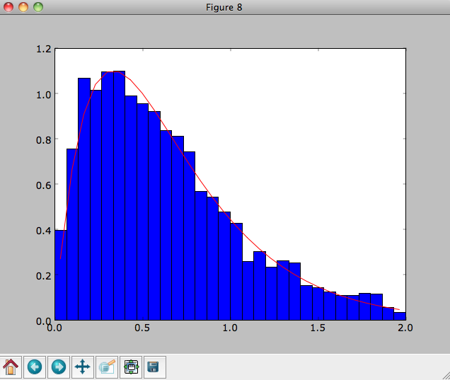
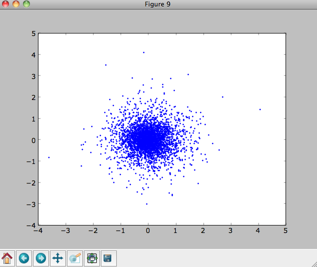

Basic usage: distribution functions¶
galpy contains various distribution function, both distribution functions for disks as well as for spheroids. This section introduces the basic procedures in galpy.df.
Disk distribution functions¶
galpy contains distribution functions for razor-thin disks: galpy.df.dehnendf and galpy.df.shudf. These are the distribution functions of Dehnen (1999AJ....118.1201D) and Shu (1969ApJ...158..505S). Everything shown below for dehnendf can also be done for shudf.
These disk distribution functions are functions of the energy and the angular momentum alone. They can be evaluated for orbits, or for a given energy and angular momentum. At this point, only power-law rotation curves are supported. A dehnendf instance is initialized as follows
>>> from galpy.df import dehnendf
>>> dfc= dehnendf(beta=0.)
This initializes a dehnendf instance based on an exponential surface-mass profile with scale-length 1/3 and an exponential radial-velocity-dispersion profile with scale-length 1 and a value of 0.2 at R=1.
We can show that these distribution functions have an asymmetric drift built-in by evaluating the DF at R=1. We first create a set of orbit-instances and then evaluate the DF at them
>>> from galpy.orbit import Orbit
>>> os= [Orbit([1.,0.,1.+-0.9+1.8/1000*ii]) for ii in range(1001)]
>>> dfro= [dfc(o) for o in os]
>>> plot([1.+-0.9+1.8/1000*ii for ii in range(1001)],dfro)
Or we can plot the two-dimensional density at R=1.
>>> dfro= [[dfc(Orbit([1.,-0.7+1.4/200*jj,1.-0.6+1.2/200*ii])) for jj in range(201)]for ii in range(201)]
>>> dfro= numpy.array(dfro)
>>> from galpy.util.bovy_plot import bovy_dens2d
>>> bovy_dens2d(dfro,origin='lower',cmap='gist_yarg',contours=True,xrange=[-0.7,0.7],yrange=[0.4,1.6],xlabel=r'$v_R$',ylabel=r'$v_T$')
We can sample from the disk distribution functions using sample. sample can return either an energy–angular-momentum pair, or a full orbit initialization. We can sample 4000 orbits for example as (could take two minutes)
>>> o= dfc.sample(n=4000,returnOrbit=True,nphi=1)
We can then plot the histogram of the sampled radii and compare it to the input surface-mass density profile
>>> Rs= [e.R() for e in o]
>>> hists, bins, edges= hist(Rs,range=[0,2],normed=True,bins=30)
>>> xs= numpy.array([(bins[ii+1]+bins[ii])/2. for ii in range(len(bins)-1)])
>>> plot(xs, xs*exp(-xs*3.)*9.,'r-')
E.g.,
We can also plot the spatial distribution of the sampled disk
>>> xs= [e.x() for e in o]
>>> ys= [e.y() for e in o]
>>> figure()
>>> plot(xs,ys,',')
E.g.,
We can also sample points in a specific radial range (might take a few minutes)
>>> o= dfc.sample(n=1000,returnOrbit=True,nphi=1,rrange=[0.8,1.2])
and we can plot the distribution of tangential velocities
>>> vTs= [e.vxvv[2] for e in o]
>>> hists, bins, edges= hist(vTs,range=[.5,1.5],normed=True,bins=30)
>>> xs= numpy.array([(bins[ii+1]+bins[ii])/2. for ii in range(len(bins)-1)])
>>> dfro= [dfc(Orbit([1.,0.,x]))/9./numpy.exp(-3.) for x in xs]
>>> plot(xs,dfro,'r-')
The agreement between the sampled distribution and the theoretical curve is not as good because the sampled distribution has a finite radial range. If we sample 10,000 points in rrange=[0.95,1.05] the agreement is better (this takes a long time):